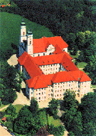

Links of interest.
| My Dad's webpage all about the Siddle family includes information on Siddle Genealogy, who we are now, who we were then, and a family tree. | |
| Check out my Brother-in-Law Jay's wooden boatworks in San Francisco - North Bay Boatworks. Look out for the page about the Dory 'Charlie Merrill', a 17 foot sailing and rowing Swampscott Dory commissioned by the Richardson Bay Maritime Association to commemorate one of their founding members | |
| The Tetsudo Association webpages are a great source of information about this great martial art. Learn about studying Tetsudo, where to train, and the various Tetsudo events that take place during the year. | |
|  | EuroPLoP™ is the premier European conference on patterns. The conference offers a variety of tracks and workshops that allow you to learn about patterns, to receive feedback on your own work, and to discuss with fellow enthusiasts. It is a unique venue to exchange knowledge about best practices and learn from other experts in various fields. |
Last updated - 6th January 2008